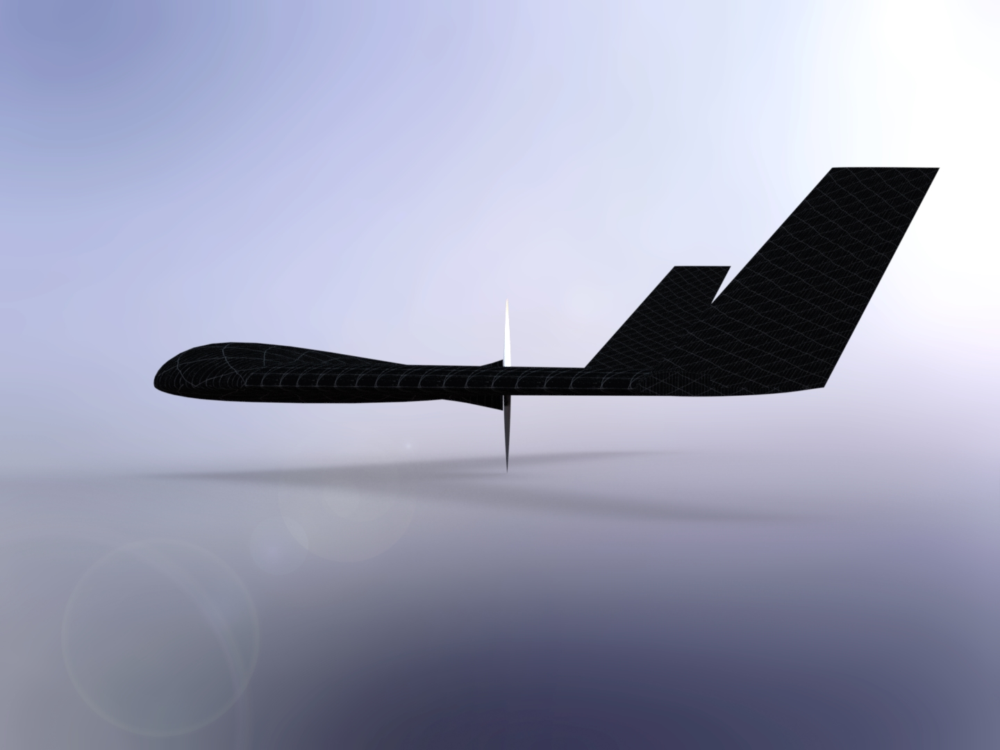

---
# Feel free to add content and custom Front Matter to this file.
# To modify the layout, see https://jekyllrb.com/docs/themes/#overriding-theme-defaults
permalink: /
title: Home Page
layout: default
---

<main data-barba="container" id="home" data-barba-namespace="home">
  <section>
    <div class="box" id="box-1">
      <h1 id="box-1-head">TR 1</h1>
      
      <iframe width="888.88889" height="500" src="https://www.youtube.com/embed/A8p2fKmrJWk?start=1" title="YouTube video player" frameborder="0" allow="accelerometer; autoplay; clipboard-write; encrypted-media; gyroscope; picture-in-picture; web-share" allowfullscreen></iframe>
    </div>
  </section>
  <section>
    <div class="text-block">
      <div class="line">
        <p style="color:#FFC000;">Maximum Endurance: 65 Hours</p>
      </div>
      <div class="line">
        <p style="color:#FFC000;">Maximum Payload: 15 Kg</p>
      </div>
      <div class="line">
        <p style="color:#FFC000;">Maximum Range: 9000 Km</p>
      </div>
      <div class="line">
        <p style="color:#FFC000;">Operating Altitude: 30000 ft</p>
      </div>
    </div>
  </section>
</main>
